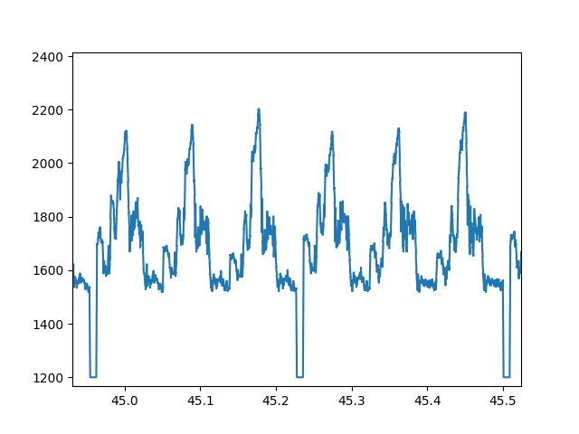
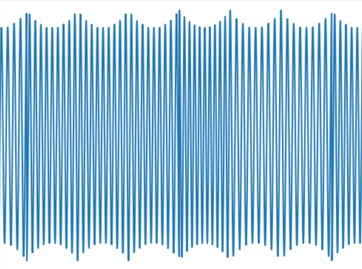
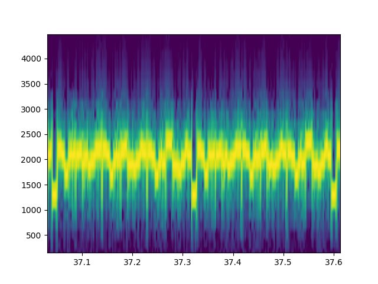
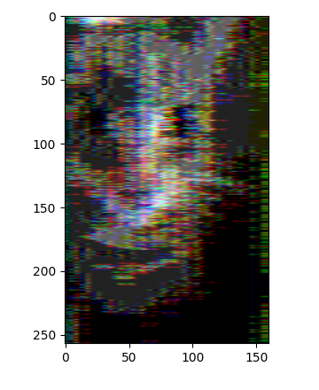

SSTV is a pretty bad way to send and recieve images nowadays. It involves some funky encoding of scanlines into a frequency space of an audio signal and inverting that process to get the image out.

Sample image used.
The jist is taking horizontal strips from the image (the image got scaled down to fit standards that i really didnt need to follow) and send the rgb values of the horizontal line in their own packets (all the reds, then all the greens, then all the blues). Add a signal in there to check when a new line begins (horizontal sync pulse) and you basically have the old school TV signals that were sent over the air.
This is just a sample of the data that needs to be sent. the Syncing signal can be seen (1200) and the 3 different peaks per sync show the seperation of rgb channels. The difficulty was that this was the easy part. Taking this data and inverting it to a waveform gets really weird.
This requires some funky Fourier transforms (stft) and inverting that takes some deep digging into scipy. What comes out is a waveform thats useable and recognizable as SSTV.
I promise this is data. I wont share the full audio recording beccause its just a bunch of humming and is very unpleasant to hear.
With a process to create audio from an image, this whole process can be reversed to get the data back out.
Luckily a spectrogram is much easier to work with compared to the inverse. Taking the peaks now and inverting the encoder we can pull out an image
It's pretty bad. The standard I used only gives a 160x256 image, but there's still a lot of smearing from a lack of data. I mostly blame this to me not knowing what I'm doing. Spectrograms are weird because you have to balance frequency data density with time data density (a finer view of frequency gives larger time bins, sort of similar to an uncertanty principle). I'm sure after a lot of tweaking I could figure this out. the spectrogram checks for data up to 22k HZ while SSTV only goes up to ~2.5k, meaning that there might be a way to skip all the high frequencies and densify my data.
That's for another day. I was able to write and read data for SSTV and this is all I wanted to do.